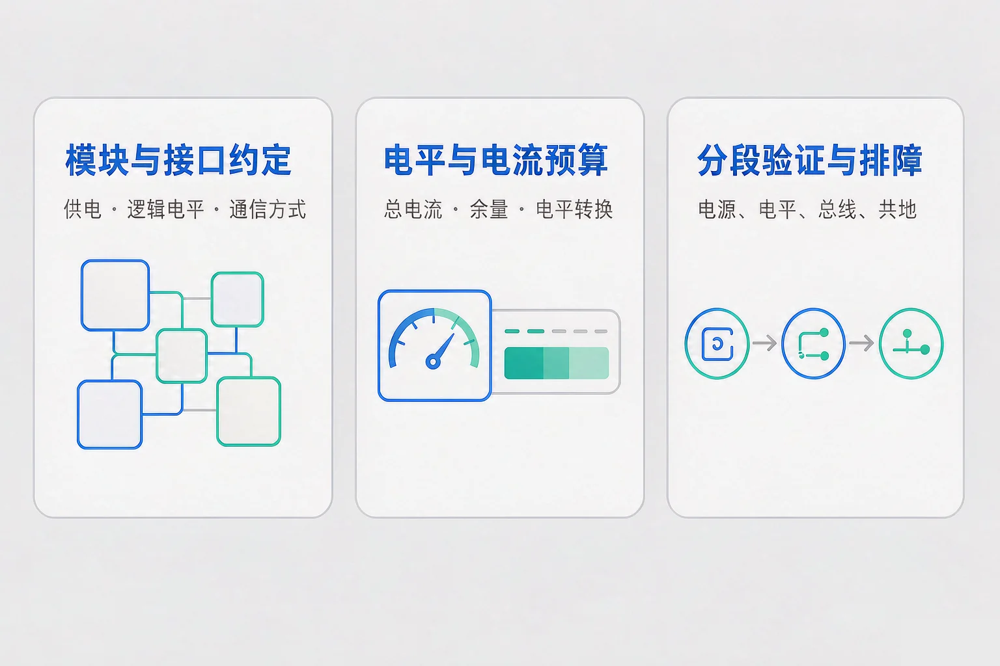
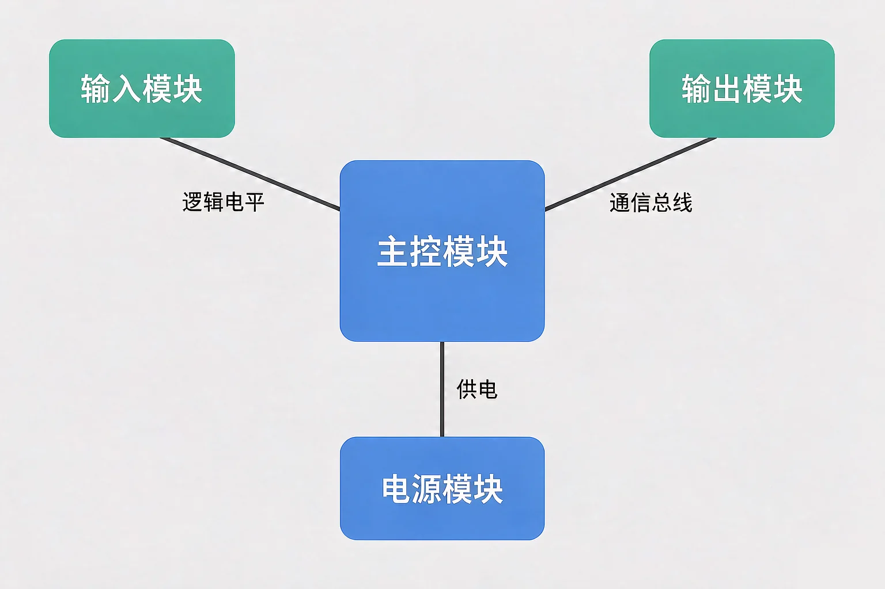
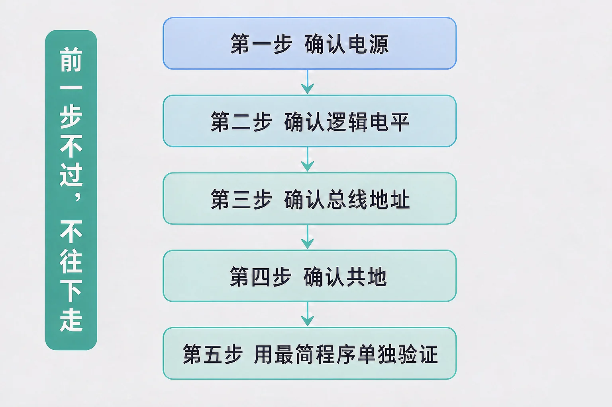

Gallery
v1.0.0 · skill v7.22.0
初中八年级 · 物联网与模块
从一堆都买对了的零件，到一台能稳定跑起来的装置，中间缺的是哪一步？

选一个你真正好奇的问题，后面的实验都会围着它转。
选择或输入后，这节课会围绕你的问题展开。
先凭直觉选一个，选完立刻看到解释——错了也没关系，正好知道要重点听哪里。
1. 把一个模块接到主控板上，除了供电和地线，还必须核对的一件事是：
供电、逻辑电平、通信方式，是模块之间必须约定的三条接口。信号用几伏表示高电平，直接决定能不能互通。错因提醒：常见错误是误认为「电压接对了信号就能通」——供电和信号是两条独立的约定，必须分别核对。
2. 四个模块各要 150 mA，主控自身 75 mA，板载稳压上限 500 mA。这套装置的问题是：
总电流要按全部模块相加来算，再和供电上限比较。超载的典型现象是电压被拉低导致主控反复重启。错因提醒：容易搞混的是只算一个模块的电流——功耗预算永远算「全部同时工作」的总和，还要留出余量。
3. 一台装置不工作，下面哪种排查顺序更省时间？
这就是分段验证：按电源、电平、信号、程序的顺序逐段确认。供电不对，后面的现象都不可信。错因提醒：许多同学误认为「改程序最快」，可信号连参考点都没有时，程序再对也读不到正确的数。
为什么要学这一课？你已经知道物联网由感知、网络、应用三层组成，也认识了常见传感器和执行器。但真正动手时，你会发现零件都买对了却接不起来，所以我们需要先给每个模块定好接口约定，再谈怎么搭。
模块化设计的要点是把系统切成能独立替换的模块。切得开不够，还要约定得清楚——约定一旦明确，坏掉的模块直接换掉，边界好的模块还能搬到别的项目里复用。

🔍 深层理解 换个角度再看一遍这件事，看看能不能说出背后的原理。
看见它：同一套功能可以切成不同粒度的模块。切得越细越容易替换，但接口数量也越多，出错的机会跟着增加。
拆开它：任意一条模块间连线都能拆成三个问题：电从哪来、信号的高低用什么电压表示、数据怎么传。三个问题都答上，这条线才算设计完。
迁移它：这种「先定接口再各自实现」的做法到处都在用：充电线与插头的标准、打印机的驱动接口、团队协作里的分工约定。
切换主控逻辑电平与模块类型，拖动模块数量，看电流余量与电平匹配怎么同时说话。
接对了不等于能用。工程上真正的功夫在调试：把系统切成几段，一段一段确认，而不是一次把整套接上碰运气。这个方法叫分段验证。
为什么先查电源？
供电不对，后面测到的所有现象都不可信：读数可能是随机的，动作可能是抽搐的。
为什么要分段？
整套一起查，错误会互相掩盖；切成段以后，能确定问题在哪一段，再往下切。

最容易搞混的是把「分段」当成「分模块」：分段验证要求的是按电气条件依次确认，不是按模块逐个试。另一个常见错误是一次改多处——同时换了模块、改了程序、重接了线，现象变了也不知道是哪一步起的作用。分段验证的规矩是：一次只改一个地方。
🔍 深层理解 换个角度再看一遍这件事，看看能不能说出背后的原理。
解释它：调试的本质是把「整套不工作」这个大问题，切成一串只能回答是或否的小问题。每答完一个，可能的原因就少一批。
比较它：「一次只改一处」看起来慢，实际比反复瞎换快得多：它保证每一次改动都能得到一条可信的结论。
四个插槽各装一个模块，确认下面两项，然后点上电自检。自检会按电源、电平、总线地址、共地四条依次判定。
上电自检结论（自上而下逐条判定）
模块装好、下面的两项确认好之后，点「上电自检」。
题目：一套装置的故障现象是「上电后主控能启动，但传感器读数一直是零」。请按分段验证的顺序列出排查步骤，并说明每一步在排除什么。
很多同学误认为「读数不对一定是程序写错了」，于是先去改程序。可读数恒为零，恰恰是最典型的硬件侧现象：没供电、线接错、电平不匹配、地址冲突，都会产生同一个现象。另一个容易搞混的地方是跳过供电直接查信号——供电这一段的结论没拿到，后面每一步的结论都是悬空的。
先凭直觉选一个，选完立刻看到解释——错了也没关系，正好知道要重点听哪里。
1. 下面哪句话是正确的？
接口约定清楚，模块才能换、才能复用。错因提醒：常见错误是误认为「同来源的模块自动兼容」——供电、电平、通信三条约定必须逐条核对。
2. 总电流已经接近供电上限，装置表现出「执行模块一动，主控就重启」。最合理的做法是：
启动瞬间电流更大，余量不足就会被拉低电压。改参数不能凭空造出电流。错因提醒：容易搞混的是把供电问题当成程序问题——电流不够是硬件预算的问题，改程序只是把故障掩盖过去。
3. 两个模块都装在一条总线上，读数有时正确有时错乱。最该先查的是：
同一条总线上地址重复，两个模块会同时应答，读数就会时好时坏。错因提醒：许多同学误认为「时好时坏就是接触不良」——信号层的地址冲突也会产生一模一样的不稳定现象。
先选一个故障现场，再从动作清单里按你认为合理的顺序挑三步，然后提交判定。
③ 你选的排查顺序
顺序挑好三步之后，点「提交排查方案」。
写下来，说给同桌听：如果第一步就跳过了供电，后面每一步的结论为什么会变得不可信？
先凭直觉选一个，选完立刻看到解释——错了也没关系，正好知道要重点听哪里。
1. 装置里有一个 5 V 逻辑的模块，主控是 3.3 V 逻辑。下面哪种判断最站得住脚？
逻辑电平是硬件属性，程序改不了。供电和信号是两条独立的约定。错因提醒：常见错误是把「供电对上」当成「信号能通」——这两件事必须分别核对。
2. 一台装置要同时驱动三个继电器模块，每个 150 mA，主控自身 75 mA。下面哪种做法最稳妥？
总电流 525 mA 已超过板载 500 mA 上限，且启动瞬间电流更大，必须外接电源。错因提醒：容易搞混的是「标称上限等于能用」——工程上要留余量，还要考虑瞬时电流。
3. 把系统切成分段验证时，下面哪种做法符合「一次只改一处」？
一次只改一处，每一次改动才能对应一条可信的结论。错因提醒：许多同学误认为「多改几处更快」，结果现象变了也说不清是哪一步起的作用。
回到开头那套补光装置：先把模块边界划清楚，把供电、电平、通信三条约定写在纸上；再按分段验证的顺序一段段确认。同一批零件，接法不变、程序不变，只是把「约定」和「顺序」补上，它就能稳定跑起来了。
给别人讲一遍：请用「接口约定、余量、分段验证、一次只改一处」这四个词，把一套装置从搭起来到调通的过程讲清楚。
三层练习，做完第一、二层就算通关；第三层留给愿意继续探索的同学。
⭐ 基础巩固（必做）
⭐⭐ 能力应用（必做）
⭐⭐⭐ 迁移挑战（选做）
左边是学它之前要先会的，右边是学会之后可以继续探索的，下面是同一领域的伙伴知识。
图谱正在加载：首次进入需下载知识索引（约 1–3 秒），加载完成后本行会自动消失。